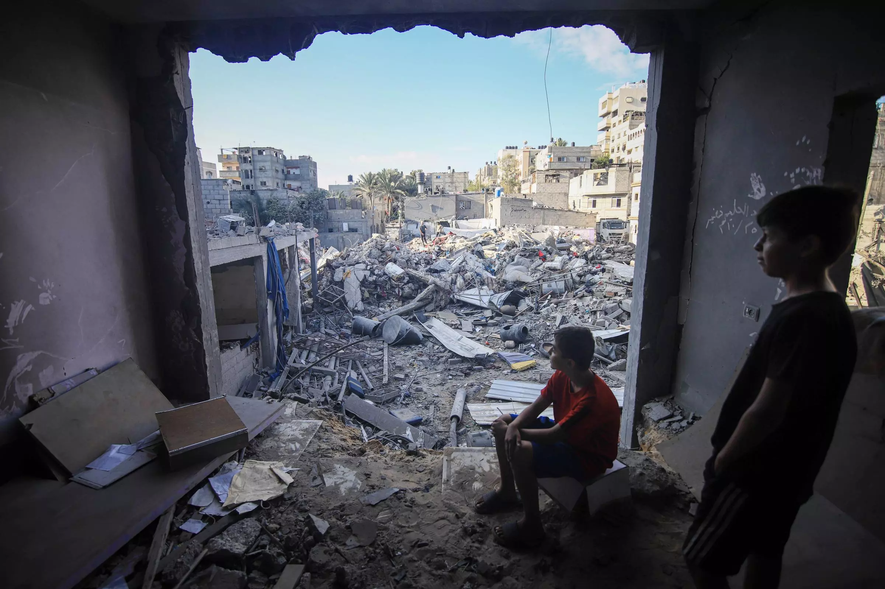

Give now to help change lives
Children look out from the remains of a destroyed building in southern Gaza. Photo: Ahmad Salem/Bloomberg via Getty Images
Around the world, children, women, and men are facing enormous obstacles. Poverty, disaster, violent conflict, and the acute impacts of climate change all have been complicated by the global pandemic. You can join us as we work together with local communities to help build a world where all can prosper.
Your gift today will go where it is needed most , helping us mobilise our teams in response to humanitarian crises in places like Ukraine and Gaza, deliver lifesaving assistance to Yemeni children displaced by violent conflict, support farmers threatened by drought in Somalia, Kenya, and Ethiopia, assist communities with recovery after earthquakes in Afghanistan and Syria, and so much more.
Mercy Corps teams are already on the ground where help is most needed. We work in more than 40 countries alongside communities as they prepare for, protect against, and recover from crisis.


Over the last five years, we have spent 86% of our resources on programs that help people in need. Charity watchdog groups give us their highest ratings for accountability, transparency and efficiency.
To donate by phone, call +44 (0) 131 662 2377
Mercy Corps Europe is a Company Registered in Scotland No. 208829 Registered Charity No. SC030289